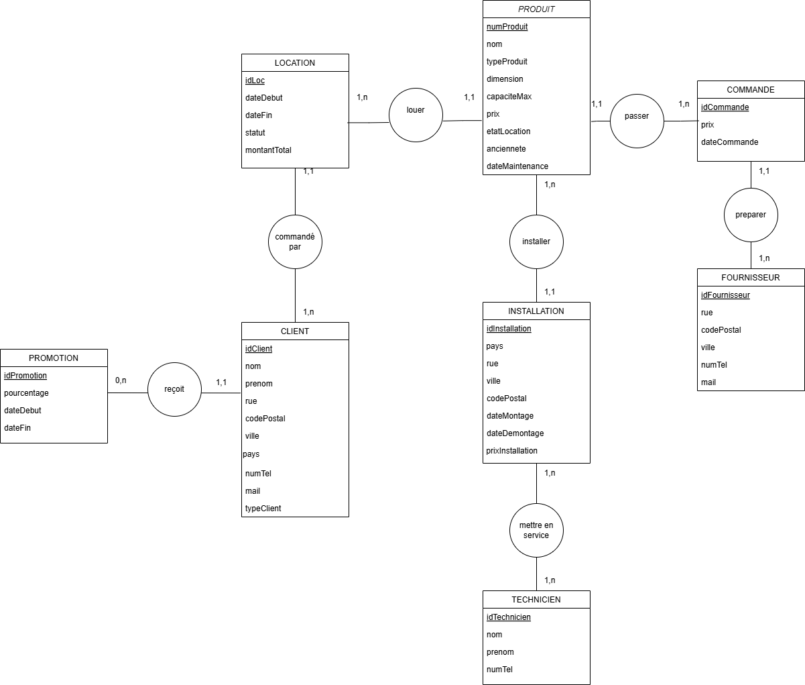
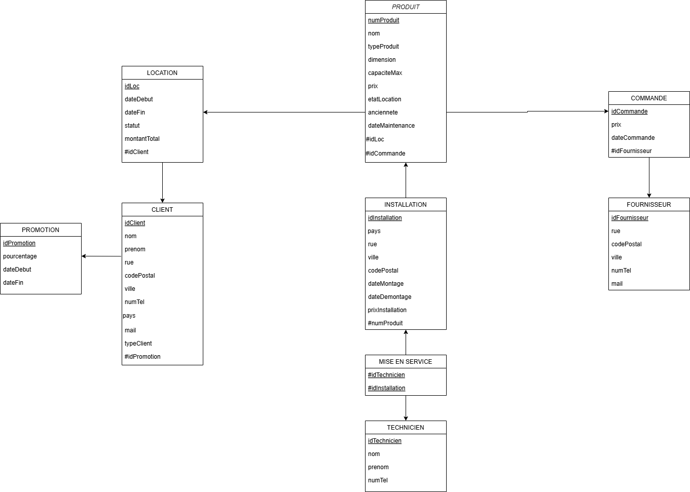
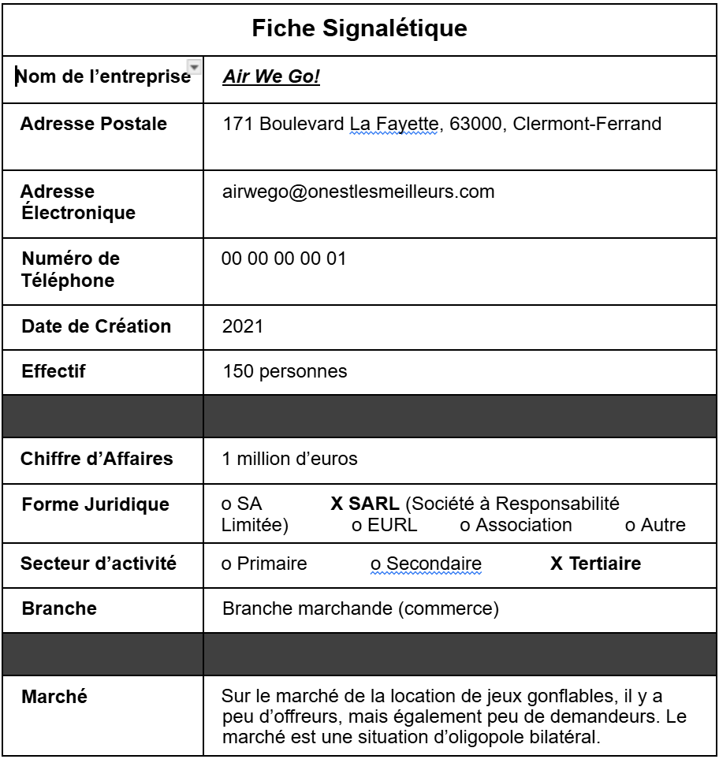

Un aperçu de mes réalisations académiques et personnelles, avec des projets orientés base de données, game design et expériences immersives.
SAE 1.04 - Base de données pour une entreprise fictive
J'ai eu l'occasion de participer à la réalisation de la SAE 1.04 en groupe de 4, qui consistait à implémenter une base de données pour une entreprise fictive de location de jeux gonflables.
J'ai pu apporter mes compétences en SQL en travaillant à l'élaboration du MCD ainsi qu'à la programmation de la base de données, en créant les différentes tables en SQL tout en veillant à leur bon fonctionnement.
Mais j'ai aussi mis à l'œuvre mes compétences en rédaction en réalisant une partie du rapport économique ainsi que le texte narratif de la vidéo de présentation du projet.
Enfin, la communication a joué un rôle majeur dans le bon déroulement de cette SAE ainsi que dans la qualité de mon travail.
Illustrations du projet
Cliquez sur les images pour les agrandir

Schéma MCD du projet

Schéma MLD du projet

Fiche signalétique de l'entreprise
SAE de 2e année
Zone reservee pour presenter une SAE de 2e annee. Tu pourras y ajouter un resume court du projet, ton role dans l'equipe, les outils utilises, les livrables produits et quelques illustrations.
A completer avec le titre exact de la SAE, le contexte, les objectifs et 2 a 3 visuels.
Visuel 1 a venirVisuel 2 a venirVisuel 3 a venir
Projet VR
Ce projet de realite virtuelle prend la forme d'un jeu d'ambiance inspire de la nyctophobie, c'est-a-dire la peur du noir. Le joueur incarne une personne qui rentre chez elle apres une longue journee de travail et souhaite simplement s'installer pour regarder un film. Pourtant, quelques secondes apres avoir allume la lumiere, le courant se coupe brutalement et la maison bascule dans l'obscurite.
Le but est alors d'explorer la maison muni d'une lampe torche pour retrouver la cle qui permet d'ouvrir la porte de la cave, puis d'acceder au panneau electrique afin de retablir le courant. Le projet repose donc sur une progression simple, mais efficace, qui joue sur la tension, l'exploration et l'immersion propres a la VR.
Cette idee me permet de travailler a la fois la mise en scene, le rythme du parcours joueur et la creation d'une atmosphere immersive autour d'un objectif clair.
Tu pourras ensuite ajouter ici les outils utilises, quelques captures d'ecran et un bilan sur les choix de gameplay ou d'ambiance.
Ambiance / decorMecanique lampe torcheUI ou prototype
Projet de conception de jeu video
Ce projet de conception de jeu video s'appuie sur un one-pager autour de Yume no Fukushuu, un jeu d'action-aventure imagine pour PC et consoles, jouable en solo ou en cooperation a deux joueurs. Le concept suit Kenji Mori, un developpeur junior epuise qui s'effondre apres un nomikai force. Dans son reve, des divinites japonaises offensees le designent comme instrument de vengeance contre les superieurs qui ont trahi leur pacte sacre.
Le jeu melange exploration, revelation et affrontements dans des royaumes oniriques inspires des obsessions de chaque antagoniste. L'univers met en avant une ambiance fortement marquee par la culture japonaise, avec une dimension fantastique, des transformations divines et une mise en scene volontairement theatrale. L'idee centrale repose sur une vengeance symbolique et sociale, plus que sur un schema heroique classique.
Ce travail me permet de developper la construction d'un univers, la definition d'une boucle de gameplay et la capacite a formaliser clairement un concept de jeu a travers un document de presentation synthetique.
Base actuelle : one-pager du projet. Tu pourras ensuite ajouter ici les mecaniques principales, les inspirations, des visuels et les choix de game design les plus importants.